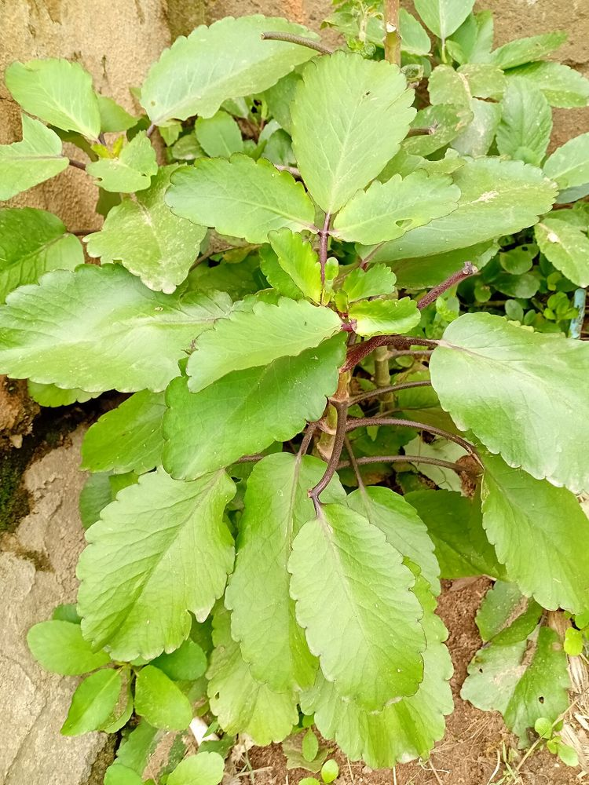

⚠️ எச்சரிக்கைக் குறிப்பு:
இதன் இலைகளில் இதயத்தைப் பாதிக்கக்கூடிய வேதிப்பொருட்கள் உள்ளன. மருத்துவர் ஆலோசனை இன்றி உட்கொள்ளக் கூடாது. (கர்ப்பிணிகள், குழந்தைகள், கால்நடைகள் அருகில் கவனம் தேவை.)
🌱 இரணக்கள்ளி – உங்களுக்குத் தெரியுமா?
1இலையிலிருந்தே பிறக்கும் செடி
ஒரு இலையை மண்ணில் வைத்தாலே, அதன் ஓரத்தில் உள்ள பள்ளங்களிலிருந்து பல குட்டிச் செடிகள் முளைத்து வரும். அதனால் இதை "அதிசய இலை" (Miracle Leaf) என்கின்றனர்.
2பெயரின் பொருள்
"இரணம்" என்றால் புண். புண்களோடு தொடர்புடைய பாரம்பரியப் பெயர் கொண்ட கள்ளி இனச் செடி இது.
3மணி போலத் தொங்கும் பூக்கள்
இதன் பூக்கள் கோயில் மணிகள் போல் தலைகீழாகத் தொங்கும். தடித்த சதைப்பற்றுள்ள இலைகளால் வறட்சியையும் தாங்கும்.
இந்தத் தகவல் பயனுள்ளதாக இருந்ததா?